The story: from the ceiling speakers to the dial
A round touchscreen dial on the bathroom wall. It browses and plays music from Music Assistant, and controls the volume, bass, treble and sub, without needing a phone. It's built on a Waveshare ESP32-S3 knob.
How the Music Assistant Smart Dial came about, from the speakers in the ceiling to the dial on the wall. The firmware, the designs and how to build your own are on the front page. Click any image to see it larger.
The story at a glance
- 2024I wanted music in the bathroom that didn't sound awful
- May 2024Chose the ceiling speakers: Dali Phantom E80
- June 2024Ceiling finished, speakers in
- July 2024Tried two hi-fi subs. They couldn't keep up
- October 2024Built enclosures for the ceiling speakers
- May 2025Built a sub box from plywood
- June 2025Car subs fitted under the cabinet
- 2025Version 1: Home Assistant controls the amps; a Tuya knob sets the volume
- Early 2026Looked for a better control: the Spotify Car Thing, then the Waveshare knob
- March 2026Version 2: designs in Figma, a web prototype, the same designs running on the knob, tested with five people
- November 2026The dial on the wall, playing. Build your own
1The problem
I wanted to listen to music in the bathroom, and I didn't want it to sound awful. Small Bluetooth speakers weren't going to cut it.
I looked at portable Bluetooth speakers and at much larger portable party speakers. Neither worked. They either took up too much space in a small bathroom or needed a constant power supply, and running mains power to a speaker in a bathroom isn't realistically achievable.
So it had to be speakers permanently mounted in the ceiling.
2The ceiling speakersMay to October 2024
I chose the Dali Phantom E80. They're among the largest ceiling speakers rated for humid rooms that don't cost an absolute fortune.
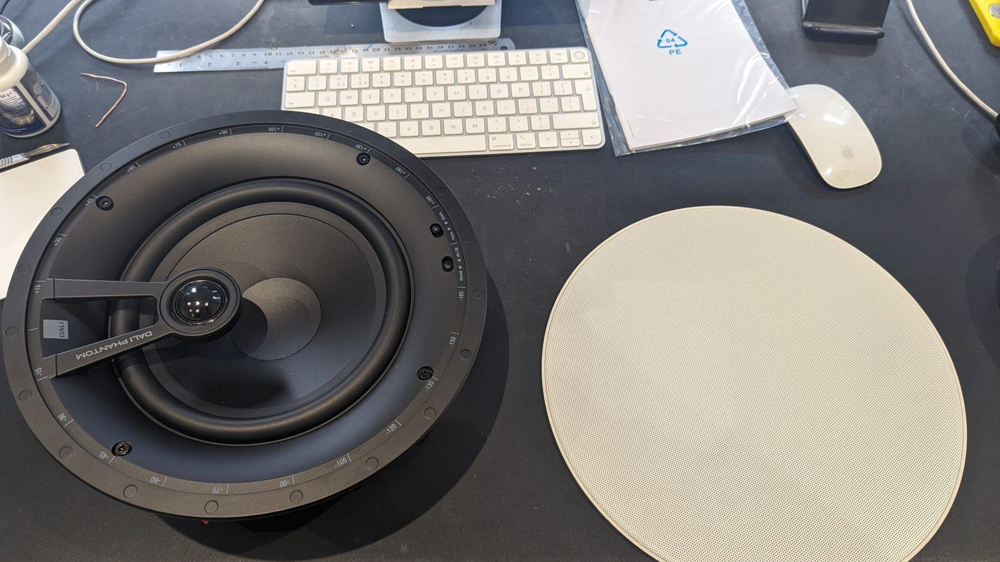
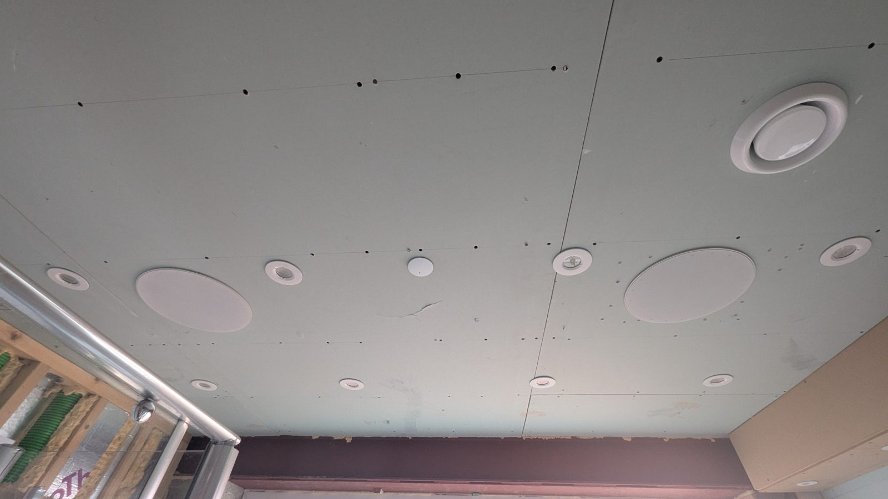
Above the ceiling, each speaker got its own enclosure, bolted between the joists.
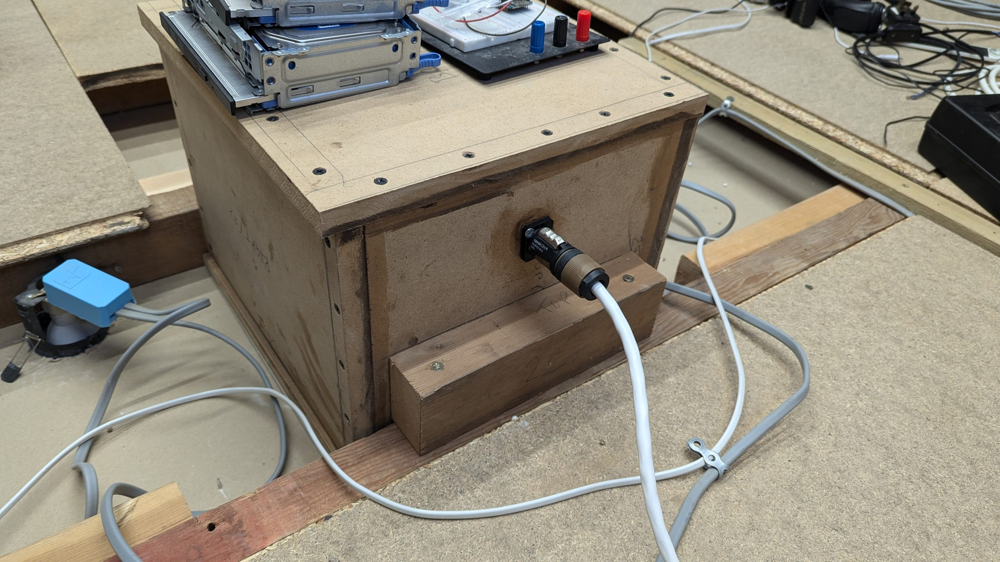
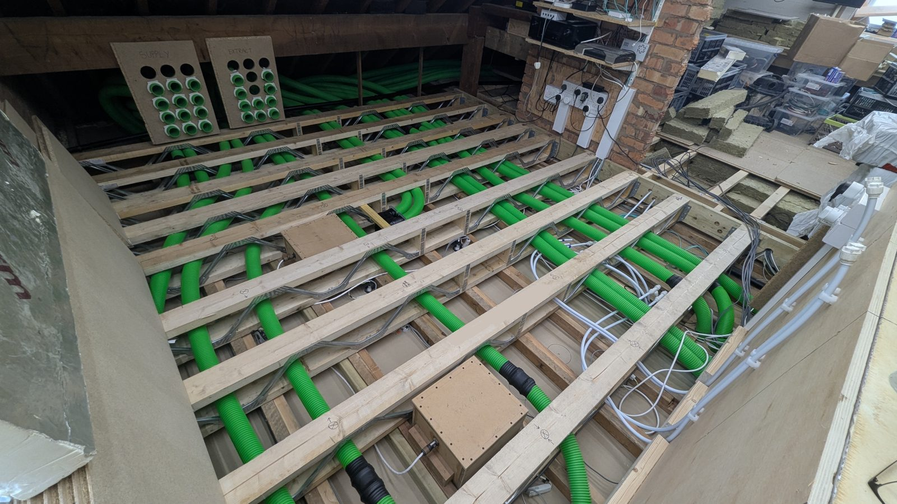
3Finding the bassJuly 2024 to June 2025
The ceiling speakers sounded great, but there was never going to be enough bass from them alone.
I tried a couple of Yamaha hi-fi subs. They couldn't keep up with what the ceiling speakers were putting out.
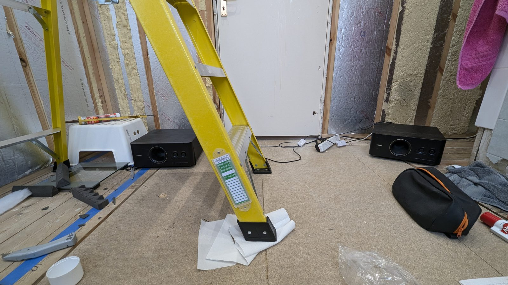
I needed a more powerful sub, and the hard part was where to put it:
- Ceiling-mounted subs? No. The ceiling was already busy: spotlights, the MVHR, the motion sensors and the speakers.
- Concealed in a wall? Hard to do in a small bathroom.
- Space that wasn't being used? ✅ The space under the cabinet was just large enough for two 10-inch subwoofers.
Subs and an amp made for humid rooms would have cost far too much. So I looked at what I already had: a collection of old car stereo parts. Two Kenwood 10-inch car subs went into a plywood box built to fit under the cabinet.
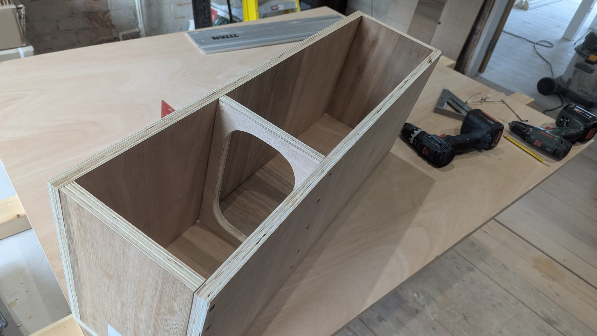
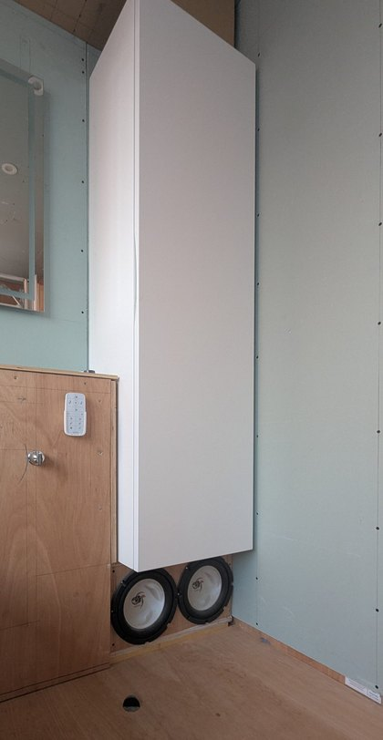
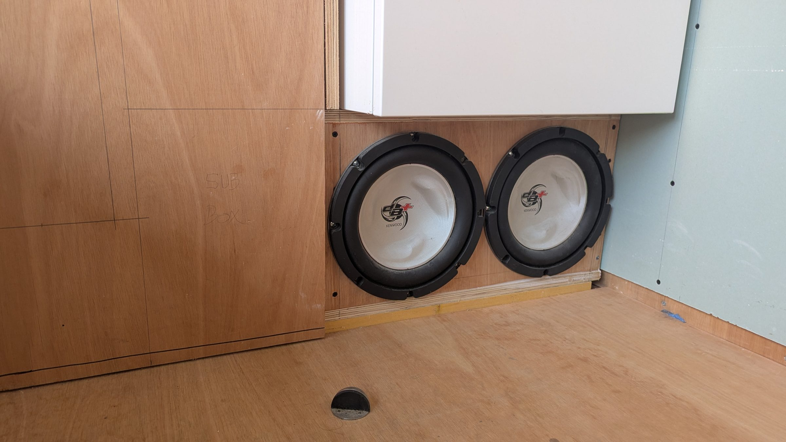
4The ampspowering car parts from the mains
A car amp needs 12 volts, so I connected the Kenwood amp to a 12 V 30 A power supply to see whether it could drive the subs at full volume. It could.
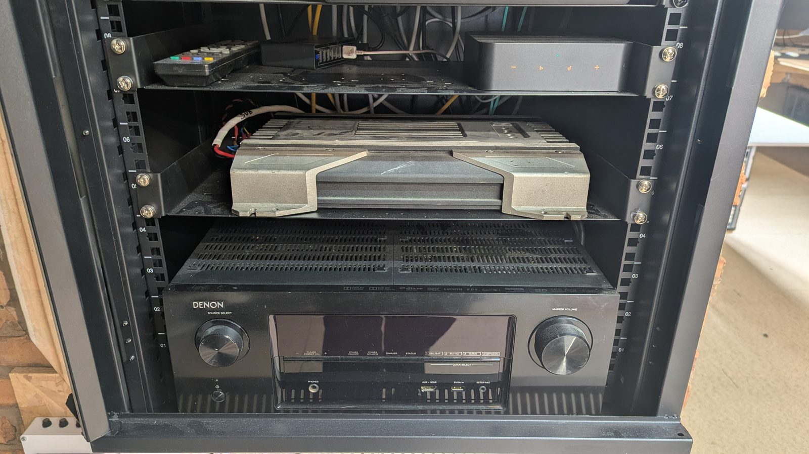
- Amplifier: Denon AVR-X2000
- Ceiling speakers: two Dali Phantom E80
- Sub amp: Kenwood 1000 W Class D mono car amp, on a 12 V 30 A power supply
- Subs: two Kenwood 10-inch car subs, 1000 W peak and 250 W RMS each, wired in parallel
- Streamer: WiiM Pro
The subs have now been in the bathroom for over a year, through at least one winter, and they're holding up very well. The car amp and its power supply turned out to be a very cheap way to get a lot of bass.
5Version 1: Home Assistant in control2025
I wanted to know whether I could control the amps from Home Assistant and have one interface for the music.
The Denon can be controlled over Telnet. I left it entirely to Claude and Home Assistant to work out how. I didn't write any of the code: I prompted and tested my way to the solution I have today. I asked for volume, bass, treble and sub control, and used Mushroom sliders to drive the scripts and automations.
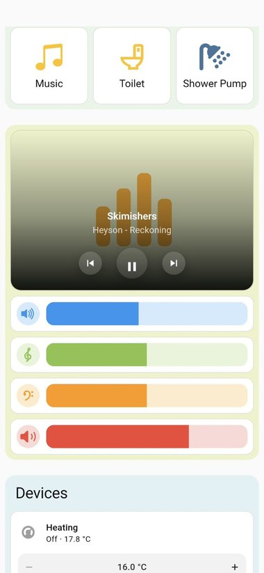
A Tuya smart knob on the wall does the everyday part. Turning it sets the volume. Pressing it turns the volume down and then switches off the smart plugs, which switch off the amps.
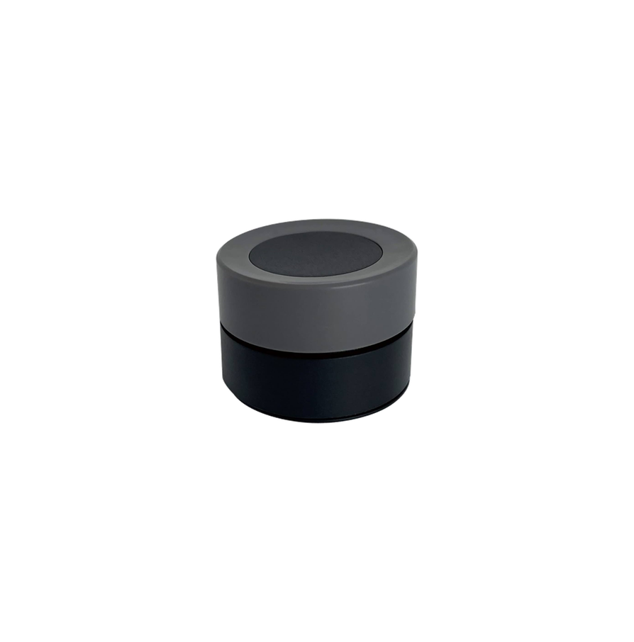
How it all connects:
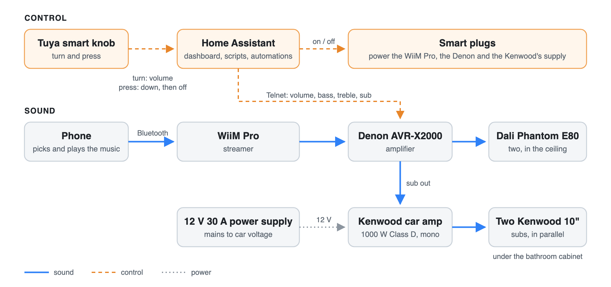
What version 1 taught me
As a proof of concept it works, and it works well. But playing music takes too many steps:
- Turn the music on from the Home Assistant dashboard. That powers up the amps and the WiiM Pro through the smart plugs.
- Connect my phone over Bluetooth.
- Choose the music on the phone and play it.
The phone shouldn't be needed at all.
6Looking for a successorearly 2026
I really liked the look of the Spotify Car Thing. A screen and a dial would have made an excellent successor. But it's discontinued, and making it do anything else takes considerable hacking.
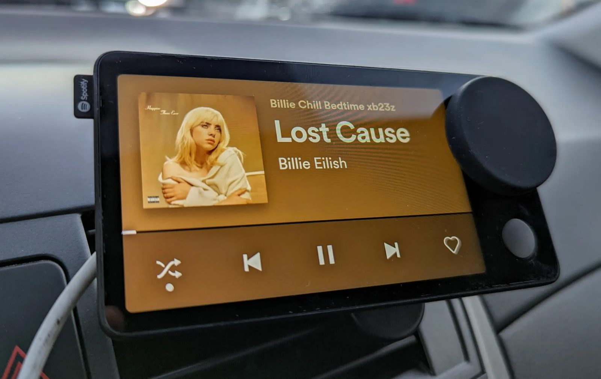
Thankfully, Waveshare makes an ESP32 rotary dial with a round touchscreen: the ESP32-S3-Knob-Touch-LCD-1.8.
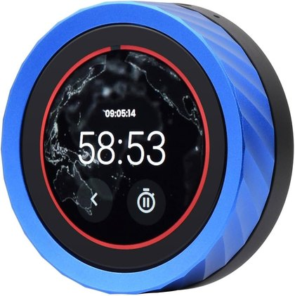
7Designing version 2March 2026
I designed some early concepts in Figma of what it might look like. Then I worked with Claude to find out whether those designs could actually run on the device.
Yes, yes they can.
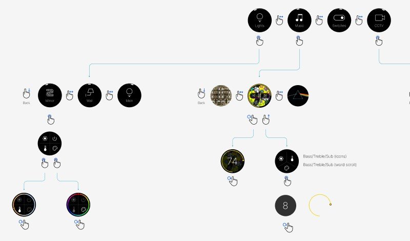
The prototype
An early interactive prototype explored the screens and how the dial and touch would work. It was built in the browser and on the knob itself at the same time: the browser version to try ideas quickly, the knob to check that the Figma designs really worked on the Waveshare hardware.
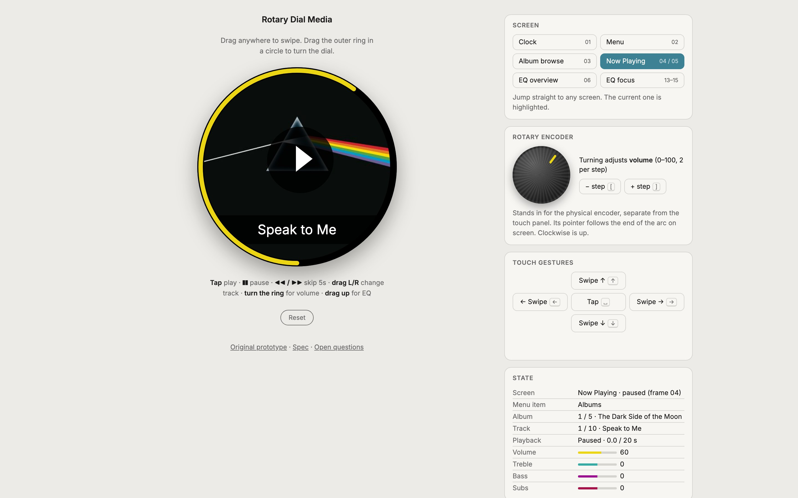
This is only a prototype: the first version, made to see and validate whether the Figma designs could be used on the Waveshare device. The real dial is built separately.
Testing it with people
I took five people I've worked with through it: firmware engineers, developers and designers, all with a keen interest in music and Home Assistant. They saw version 1, the full version 2 flow and the prototype.
They really liked the idea, and they're looking forward to seeing the real thing in action.
The full flow
Encouraged, I carried on designing with Claude to explore the full range of flows, micro-interactions and navigation.
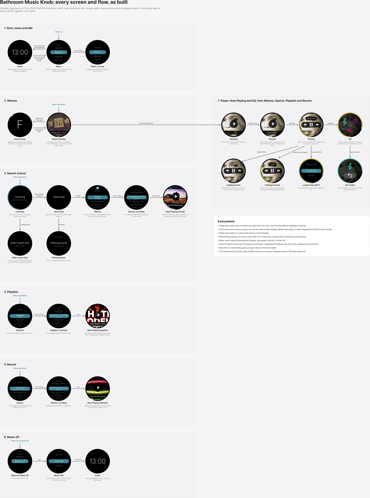
The design system
Once the flows worked, the design became the master copy. I rebuilt every screen in Figma from a single set of colours, sizes and parts, one token per job. Then the firmware was changed until it matched the design, not the other way round. The finished file is public: all 60 screens, the 95 variables, and the earlier concepts and flows that led to it.
▶ Open the design in Figma · more in part 3, the screens
Try it in your browser
The real dial's screens, running in your browser: the same code that runs on the knob, with a demo library of 226 albums and 5 playlists from my collection. Turn it with the outer ring, the scroll wheel or the arrow keys, and flick, swipe and tap on the screen. Playback is simulated.
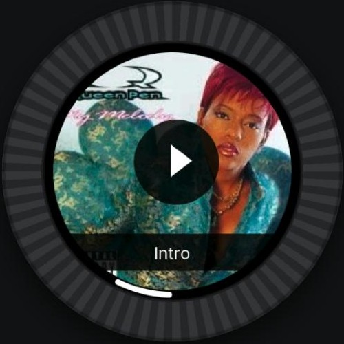
Credits
- Photos of the build, the dashboard, the Figma designs and the prototype: mine.
- Tuya smart knob, Spotify Car Thing, Waveshare knob: product photos, shown for reference only. They belong to their makers.
- Music Assistant: the music library and player behind version 2.
- Mushroom: the sliders on the version 1 dashboard.
Licence
MIT for my own work here. The product photos and anything third-party keep their own licences.